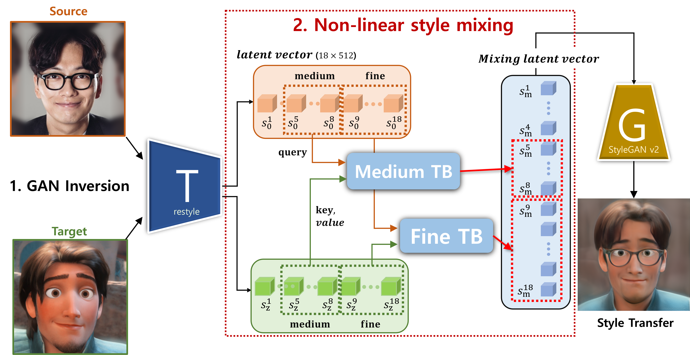

Architecture
잠재벡터의 계층(coarse, medium, fine)을 별도로 독립적인 신경망을 두어 스타일 벡터를 인코딩한다.
- 폭넓은 스타일 공간에서의 샘플링 방법을 통해 다양성을 증가 시켰다.
- 공간적 장기 의존성을 파악하는 Transformer 구조를 활용해 의미 있는 스타일 특징의 조합을 만들어냈다.
- 외형적인 부분은 사용자의 얼굴을, 미세한 부분은 캐릭터의 스타일을 따르도록 한다.
Stylization은 주어진 이미지를 원하는 특정 스타일로 변환하는 기술이다. 초기의 연구에서는 그래디언트를이용한 연구가 진행되었으나, 최근에는 고품질의 얼굴 이미지 생성이 가능한 생성 모델의 발전으로, 생성망을 활용한 stylization 기술이 발전되어왔다. 이 중 JoJoGAN은 GAN inversion을 통해 찾아낸 참조 스타일의 잠재 벡터와 임의의 노이즈의 가중합 통해 fine-tuning이 가능한 학습 과정을 소개했으며, 한 장의 참조 이미지만을 사용해 우수한 스타일 변환이 가능함을 보였다. 하지만 기존 가중합 기반 스타일 결합은 단순 선형 결합 형태로써 스타일 코드를 표현하는 매니폴드가 제한되는 문제점을 갖는다.
따라서 해당 잠재공간을 활용한 stylization 결과물은 미세한 표현을 효과적으로 반영하지 못함과 동시에 다양성에서 한계를 갖는다. 이러한 문제점을 해결하고자 본 논문에서는 두 가지 방법을 제안한다. 첫 번째로 다양성과 생성 품질을 높이기 위한 비선형적 스타일 결합으로써 스타일 잠재 공간을 폭 넓게 구성하는 방법이다. 이는 확장된 스타일 공간에서의 다양한 샘플링을 가능하게 함으로써 결과물의 품질 및 다양성을 향상시킨다. 두 번째로 스타일 결합에 있어서 공간적 장기 의존성을 파악해 의미 있는 스타일 특징의 조합을 만들어낼 수 있도록 계층별 Transformer 구조를 활용했다. 즉, coarse, middle, fine 계층에 대해 별도로 독립적인 신경망을 두어 스타일 코드를 인코딩한다. 제안하는 방법을 통해 전체적 외형은 원본의 외형을 따르도록 하고 미세영역에 대해 참조 스타일을 반영하도록 유도함으로써, 정량적/정성적/주관적 실험 결과를 통해 개선된 stylization 성능을 확인했다.
잠재벡터의 계층(coarse, medium, fine)을 별도로 독립적인 신경망을 두어 스타일 벡터를 인코딩한다.
Using Nerfies, you can re-render a video from a novel viewpoint such as a stabilized camera by playing back the training deformations.
There's a lot of excellent work that was introduced around the same time as ours.
Progressive Encoding for Neural Optimization introduces an idea similar to our windowed position encoding for coarse-to-fine optimization.
D-NeRF and NR-NeRF both use deformation fields to model non-rigid scenes.
Some works model videos with a NeRF by directly modulating the density, such as Video-NeRF, NSFF, and DyNeRF
There are probably many more by the time you are reading this. Check out Frank Dellart's survey on recent NeRF papers, and Yen-Chen Lin's curated list of NeRF papers.
@article{park2021nerfies,
author = {Park, Keunhong and Sinha, Utkarsh and Barron, Jonathan T. and Bouaziz, Sofien and Goldman, Dan B and Seitz, Steven M. and Martin-Brualla, Ricardo},
title = {Nerfies: Deformable Neural Radiance Fields},
journal = {ICCV},
year = {2021},
}